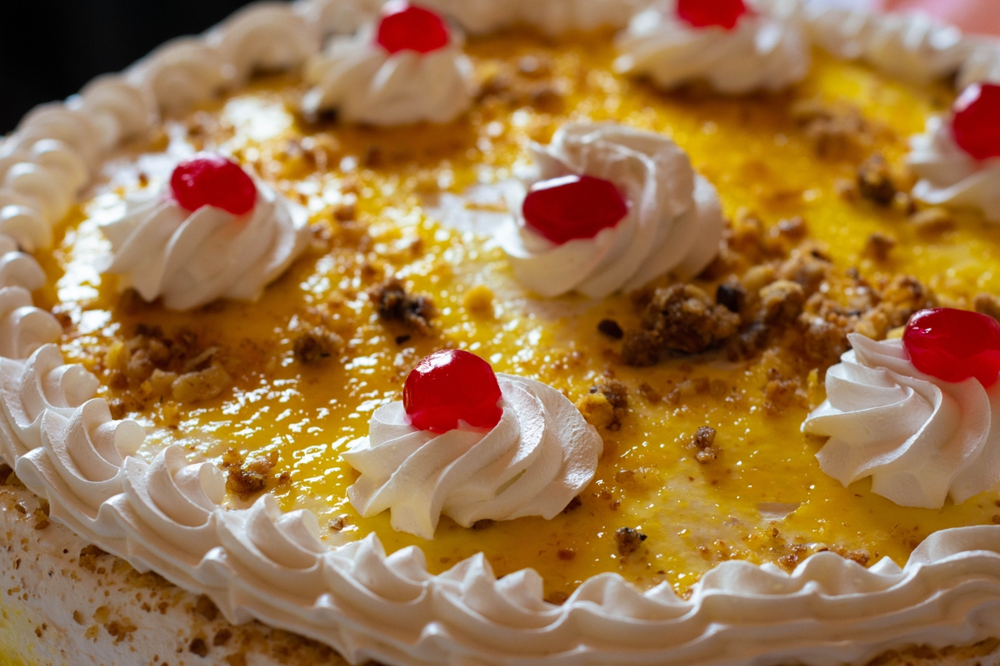

Home
Extra Pineapple Cheesecake

Image Credit: Rawpixel
Description
Creamy pineapple-flavored cheesecake topped with pineapple bits, dusted with brown sugar, covered in whipped cream, and sprinkled with chopped walnuts.
Easy to make with no cooking required. Recommend a powered mixer, but not necessary.
Ingredients
- 1 box Jell-o No Bake Cheesecake
- 1 cup whole milk
- 1 can pineapple tidbits in juice
- 4tbsp light brown sugar
- 8oz whipped cream
- 1/2 cup chopped walnuts
Steps
- Open can of pineapple tidbits and collect 1 cup of juice from can then drain the rest of the juice. Store tidbits in refrigerator.
- Follow directions for Jell-o No Bake Cheesecake in 9" pie dish, replacing one of the two cups of milk with your collected pineapple juice.
- Before placing in refrigerator to set, spread your pineapple tidbits over the top and gently press into the filling, then dust with brown sugar.
- After setting according to the directions, cover with whipped cream and sprinkle chopped walnuts. If desired, top with maraschino cherries.
- Try not to eat the whole thing.